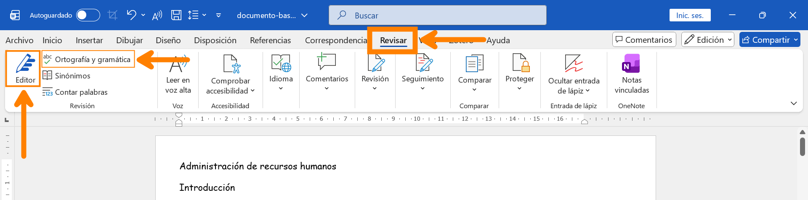
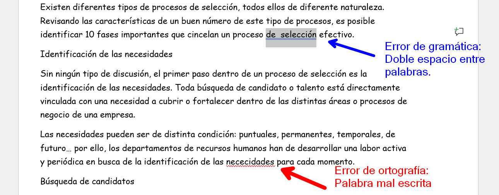
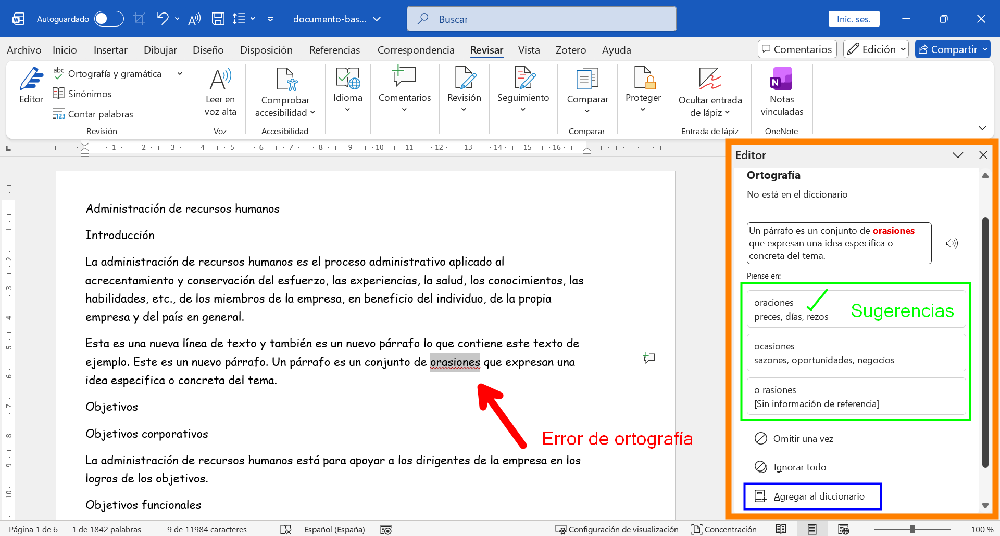
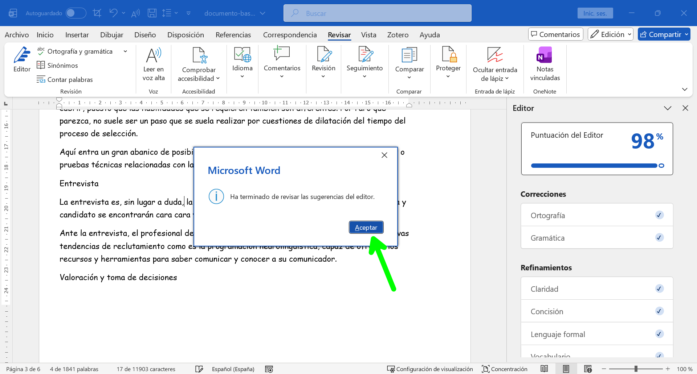

CÓMO CORREGIR ERRORES DE GRAMÁTICA Y ORTOGRAFÍA
En esta guía aprenderás a usar la herramienta de revisión o editor para corregir errores de gramática y ortografía en tus documentos de Word.
Abre el Panel usando la tecla de función F7. También se puede abrir desde la pestaña REVISAR, luego clic en el botón “Ortografía y gramática” o en nuevas versiones clic en el botón “Editor”.

Panel de Revisión
- Correcciones: Los errores se agrupan en dos colores: Ortografía (rojo) y Gramática (azul).

Corregir el texto

-
Elige una opción:
- Sugerencia: Haz clic en la palabra correcta que te propone Word para reemplazarla.
- Omitir una vez: Si la palabra está bien escrita pero Word no la reconoce.
- Omitir todo: Si la palabra se repite mucho en el texto (ej. un apellido).
- Agregar al diccionario: Para que Word nunca vuelva a marcar esa palabra como error.
- El panel saltará automáticamente a la siguiente corrección hasta terminar el documento.
